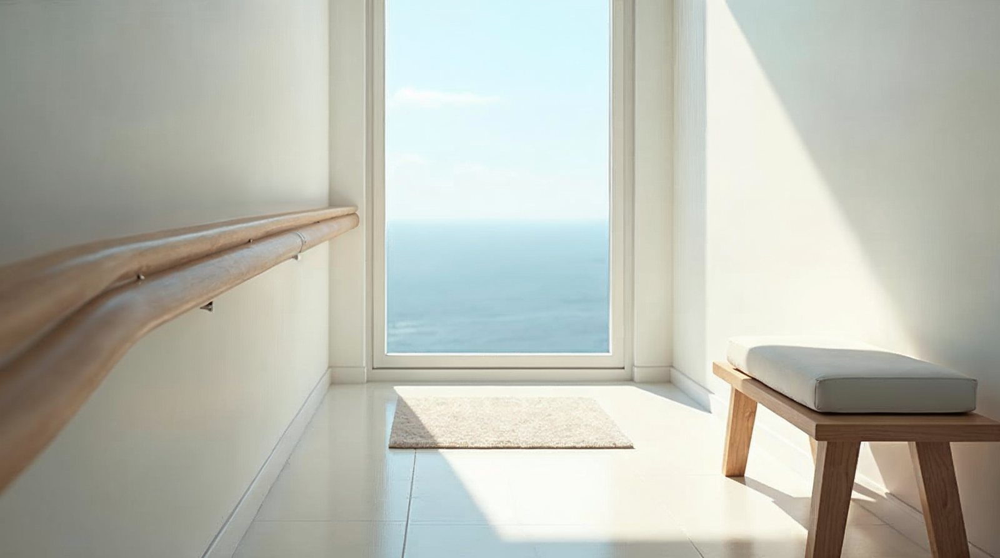
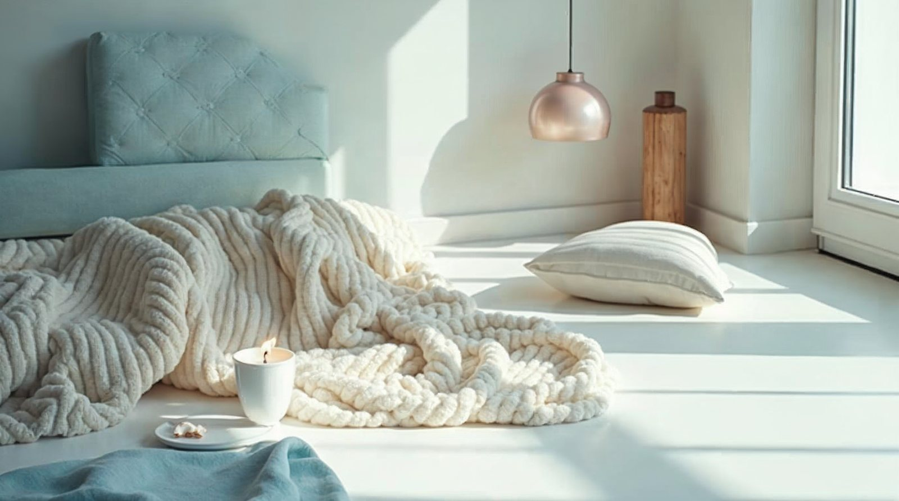
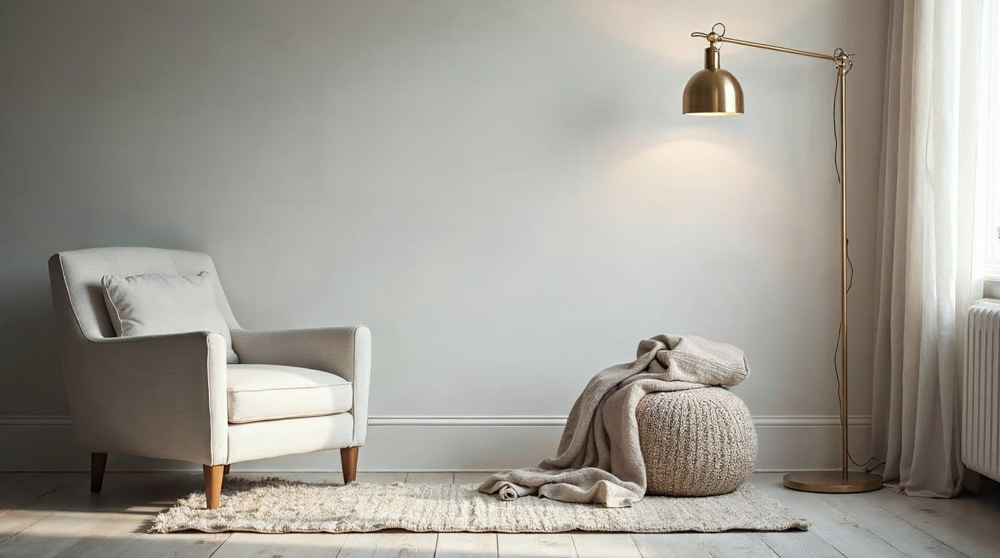
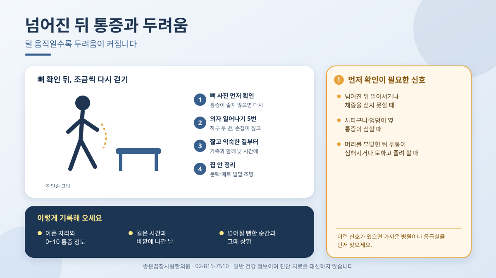

이종호 한의사 감수좋은꿈참사랑한의원 대표원장 (한의사 면허번호 19769)발행 2026-11-26 · 수정 2026-11-26
이 글의 차례
현관 앞 계단에서 발을 헛디뎌 엉덩방아를 찧으셨습니다. 병원에서 사진을 찍어 보니 다행히 뼈는 괜찮다고 했습니다. 그런데 그 뒤로 어머니가 달라지셨습니다. 시장에 가자고 해도 "다리가 아파서"라며 집에만 계시고, 집 안에서도 벽을 짚고 조심조심 걸으십니다. 몇 주가 지나도 허리와 엉덩이가 묵직하다고 하십니다.
넘어진 뒤의 이야기는 이렇게 두 갈래로 이어지는 경우가 많습니다. 하나는 몸에 남은 통증이고, 다른 하나는 마음에 남은 두려움입니다. 그리고 이 두 가지가 서로를 붙잡아 회복을 더디게 만들기도 합니다.
진료실에서 넘어진 뒤 통증으로 오시는 어르신들께 저는 통증 자리를 살피면서 꼭 한 가지를 더 여쭙니다. "요즘 바깥에는 얼마나 나가세요?" 이 질문에 대한 대답이 회복의 방향을 많이 알려 줍니다. 몸이 아파서 덜 움직이고, 덜 움직여서 다리 힘이 빠지고, 힘이 빠져서 또 넘어질까 겁이 나는 고리가 생기기 쉽기 때문입니다.
이 글에서는 넘어진 직후 먼저 확인해야 할 것, 남은 통증을 어떻게 살피는지, 두려움 때문에 움직임이 줄어드는 고리를 어떻게 끊어 갈 수 있는지를 차례로 정리했습니다.
넘어진 직후에는 무엇부터 확인하나요?
넘어진 직후 가장 먼저 확인할 것은 뼈와 머리입니다. 어르신은 뼈가 약해져 있는 경우가 많아, 젊은 사람이라면 멍들고 끝날 충격에도 손목, 고관절, 허리뼈, 어깨에 금이 가거나 부러질 수 있습니다. 넘어진 뒤 그 부위에 체중을 싣기 어렵거나, 붓기와 통증이 점점 심해진다면 정형외과에서 사진을 먼저 찍어 보셔야 합니다.
특히 엉덩방아를 찧은 뒤 허리 한가운데가 아프다면 허리뼈 압박골절을, 옆으로 넘어진 뒤 사타구니나 엉덩이 옆이 아파 걷기 힘들다면 고관절 골절을 먼저 생각합니다. 처음 사진에서 잘 보이지 않다가 며칠 뒤 다시 찍어 확인되는 경우도 있어, 통증이 줄지 않으면 다시 확인하시는 것이 좋습니다.
머리를 부딪히셨다면 그날과 다음 날은 곁에서 지켜봐 주세요. 피를 묽게 하는 약을 드시는 어르신은 겉으로 큰 상처가 없어도 머릿속에 출혈이 생길 수 있어 더 주의가 필요합니다. 평소와 다른 모습이 보이는지 글 아래쪽의 '먼저 확인이 필요한' 신호를 함께 참고해 주세요.
넘어진 뒤 통증은 왜 오래 남을까요
뼈에 이상이 없더라도 넘어질 때 우리 몸은 큰 충격을 받습니다. 순간적으로 몸을 지키려고 근육이 세게 수축하고, 바닥에 부딪힌 자리의 근육과 인대에는 작은 손상과 멍이 생깁니다. 어르신은 이런 조직이 회복되는 속도가 젊을 때보다 느려 통증이 몇 주 이어지기 쉽습니다.
넘어질 때 몸을 비틀거나 반사적으로 버티면서 아픈 자리와 다른 곳이 함께 굳기도 합니다. 엉덩방아를 찧었는데 목과 어깨가 뻐근하거나, 손을 짚었는데 팔꿈치와 어깨까지 아픈 경우입니다. 통증 때문에 자세를 바꾸어 걷다 보면 반대쪽 무릎이나 허리에 부담이 옮겨 가기도 합니다.
마음의 긴장도 통증을 붙잡아 둡니다. 또 넘어질까 겁이 나면 몸 전체가 잔뜩 힘을 준 채 움직이게 됩니다. 늘 힘이 들어가 있는 근육은 쉽게 지치고 뻐근해져서, 통증이 줄어드는 속도를 늦춥니다.
왜 두려움이 회복을 더디게 할까요
넘어진 경험은 몸보다 마음에 더 오래 남기도 합니다. '또 넘어지면 어쩌나' 하는 걱정에 바깥 외출을 줄이고, 집 안에서도 될 수 있으면 앉아 계시게 됩니다. 조심하는 것 자체는 좋지만, 움직임이 지나치게 줄면 문제가 생깁니다.
어르신은 며칠만 누워 지내도 다리 근육이 눈에 띄게 줄어듭니다. 다리 힘이 빠지면 걸음이 느려지고 균형을 잡는 힘도 약해집니다. 그러면 정말로 넘어지기 쉬운 몸이 되고, 그 사실이 두려움을 더 키웁니다. 두려움이 움직임을 줄이고, 줄어든 움직임이 다시 넘어짐을 부르는 고리입니다.
이 고리는 바깥 활동이 줄면서 기분과 잠, 입맛에도 이어집니다. 사람을 덜 만나고 햇빛을 덜 보면 기분이 가라앉고, 낮에 졸다가 밤잠이 얕아지고, 입맛이 줄어 기운이 더 떨어집니다. 그래서 넘어진 뒤 회복은 통증 자리만이 아니라 하루 전체를 함께 살펴야 합니다.
넘어짐을 부르는 원인도 함께 살펴야 할까요?
넘어진 이유를 찾아보는 것은 다음 넘어짐을 막는 첫걸음입니다. 단순히 발을 헛디딘 것인지, 어지러워서 휘청인 것인지, 다리에 힘이 빠져 주저앉은 것인지에 따라 살펴볼 곳이 달라집니다.
앉았다 일어설 때 핑 돌아 넘어지셨다면 혈압이 순간 떨어지는 기립성 저혈압이나 드시는 약의 영향을 생각합니다. 밤에 화장실에 가다 넘어지셨다면 어두운 동선과 수면제, 잦은 밤중 소변을 함께 봅니다. 시력이 나빠졌거나 발의 감각이 둔해졌거나 걸음이 눈에 띄게 느려졌다면 그것도 원인이 될 수 있습니다.
드시는 약이 여러 가지라면 한번 정리해 보시길 권합니다. 혈압약, 수면제, 신경안정제, 일부 진통제처럼 어지럼이나 졸음을 부르는 약이 겹쳐 있으면 넘어짐이 늘 수 있습니다. 정리한 목록을 들고 처방한 병원과 상의해 보세요. 약을 혼자 줄이거나 끊지는 않으셔야 합니다.

스스로 살펴볼 수 있는 점
아래 질문에 답해 보시면 지금 어디서부터 살펴야 할지 짐작하는 데 도움이 됩니다. 가족이 함께 답해 주셔도 좋습니다.
- 넘어진 뒤 병원에서 뼈 사진을 찍어 보셨나요?
- 통증이 날이 갈수록 줄고 있나요, 그대로이거나 심해지고 있나요?
- 넘어지기 전보다 바깥에 나가는 날이 줄었나요?
- 의자에서 팔을 짚지 않고 일어설 수 있으신가요?
- 걸을 때 벽이나 가구를 짚는 일이 늘었나요?
- 또 넘어질까 걱정되어 하고 싶은 일을 미루고 계신가요?
통증이 줄지 않거나 점점 심해진다면 뼈를 다시 확인해 보시는 것이 순서입니다. 통증은 줄고 있는데 움직임과 외출이 줄었다면 두려움의 고리를 끊는 쪽으로 이야기를 이어 갑니다.
먼저 이렇게 여쭙니다
처음 오시면 저는 대략 이런 순서로 여쭙니다.
- 언제, 어디서, 어떻게 넘어지셨나요? 넘어지기 직전 어지럽거나 힘이 빠지셨나요?
- 어디를 부딪히거나 짚으셨고, 지금 가장 아픈 곳은 어디인가요?
- 병원에서 받은 검사와 결과는 어떠셨나요?
- 최근 일 년 사이 넘어지신 적이 또 있나요?
- 드시는 약은 무엇이고, 골다공증 진단을 받으신 적이 있나요?
- 넘어진 뒤 하루를 어떻게 보내고 계신가요?
검사 결과지와 약 봉투를 가져와 주시면 가장 정확합니다. 골다공증 검사를 받으신 지 오래되었다면 이번 기회에 확인해 보시길 권합니다.
일상에서 먼저 해 볼 수 있는 것
뼈에 이상이 없다는 확인을 받았다면, 통증이 허락하는 범위에서 조금씩 움직이는 것이 회복의 바탕이 됩니다. 처음 며칠은 아픈 자리를 쉬게 하되, 오래 누워 계시지 않도록 해 주세요.
- 하루에 몇 번 집 안을 천천히 걷기
- 의자에서 일어났다 앉기를 손잡이를 짚고 다섯 번씩
- 식탁이나 싱크대를 잡고 발뒤꿈치 들었다 내리기
- 아픈 자리는 처음 이틀 정도 차갑게, 그 뒤로는 따뜻하게
- 실내에서도 미끄럽지 않은 실내화 신기
- 밤에 화장실 가는 길에 발밑 조명 켜 두기
운동은 '조금 힘들지만 할 만하다' 정도가 좋습니다. 하고 난 뒤 통증이 다음 날까지 크게 남는다면 양을 줄이고, 다음 날 괜찮다면 조금씩 늘려 가시면 됩니다. 혼자 하시기 불안하다면 가족이 곁에 있을 때 하시거나 단단한 가구를 짚고 하세요.
바깥 외출은 짧고 익숙한 길부터 다시 시작해 보세요. 집 앞 골목을 한 바퀴 도는 것부터, 가족과 함께 낮 시간에, 손잡이가 있는 길로 다니시면 됩니다. 지팡이가 도움이 된다면 망설이지 말고 쓰시길 권합니다. 지팡이는 약해졌다는 표시가 아니라 다시 바깥으로 나가게 해 주는 도구입니다.
넘어진 뒤 회복에서 자주 헷갈리는 것
첫째, 나이가 들면 넘어지는 건 어쩔 수 없다는 생각입니다. 나이가 들수록 넘어지기 쉬워지는 것은 맞지만, 다리 힘과 균형, 집 안 환경, 드시는 약을 살피면 넘어짐을 줄일 수 있는 여지가 꽤 있습니다. 한 번 넘어지셨다면 그 이유를 찾아보는 좋은 기회로 삼으시면 됩니다.
둘째, 아프지 않을 때까지 기다렸다가 움직이자는 생각입니다. 통증이 완전히 사라지기를 기다리는 동안 다리 힘은 계속 빠집니다. 뼈에 이상이 없다는 확인을 받았다면, 아픈 정도가 견딜 만한 범위에서 조금씩 움직이는 쪽이 대개 회복을 앞당깁니다.
셋째, 넘어진 이야기를 하면 가족이 걱정하니 감추는 것입니다. 작은 넘어짐이나 넘어질 뻔한 일도 알려 주셔야 원인을 미리 찾을 수 있습니다. 넘어질 뻔한 순간이 잦아졌다는 것은 몸이 미리 보내는 중요한 신호입니다.

가족은 어떻게 도울 수 있을까요?
가족의 걱정이 지나치면 어르신의 두려움도 커집니다. "넘어지면 큰일 나니 가만히 계세요"라는 말보다 "같이 천천히 걸어 봐요"라는 말이 회복에 훨씬 도움이 됩니다. 대신 해 드리는 일을 조금씩 줄이고, 스스로 하실 수 있는 일을 함께 늘려 가 주세요.
집 안을 한번 살펴봐 주시는 것도 큰 도움이 됩니다. 문턱과 미끄러운 매트, 바닥에 놓인 전선과 물건을 정리하고, 욕실에는 미끄럼 방지 매트와 손잡이를 두시면 좋습니다. 자주 쓰는 물건은 허리를 굽히거나 까치발을 들지 않아도 닿는 높이에 두어 주세요. 잘 맞지 않는 헐렁한 슬리퍼나 끌리는 긴 바지도 발이 걸리기 쉬우니 한번 살펴봐 주세요.
안경 도수가 오래되었다면 바꿔 드리는 것도 넘어짐을 줄이는 데 도움이 됩니다.

한의원에서 함께 살필 수 있는 경우
- 뼈에 이상은 없다는데 넘어진 자리의 통증과 뻐근함이 몇 주째 이어지는 경우
- 넘어질 때 비틀거나 버티면서 목, 어깨, 허리가 함께 굳은 경우
- 통증 때문에 걸음이 달라져 반대쪽 무릎이나 허리까지 불편해진 경우
- 넘어진 뒤 잠이 얕아지고 기운과 입맛이 떨어진 경우
- 몸이 늘 긴장되어 있고 움직이기가 겁나는 경우
좋은꿈참사랑한의원에 오시면 맥을 짚고 아픈 자리를 직접 만져 보며 확인합니다. 그 내용을 바탕으로 침, 굳은 근육을 풀어 주는 관리, 온열 관리, 한약 상담 가운데 지금 상태에 맞는 것을 진찰한 뒤 정합니다. 몸을 바로잡는 추나 같은 관리는 어르신의 뼈 상태를 먼저 확인하고 더욱 조심스럽게 정합니다.
피를 묽게 하는 약을 드시는 분은 침 치료 전에 꼭 말씀해 주세요. 한약을 상의할 때는 드시는 약을 모두 확인하고 신중하게 정합니다. 정형외과 진료나 재활 치료를 받고 계시다면 그 흐름과 나란히 이어 가실 수 있습니다.
이렇게 기록해 오시면 상담이 쉬워집니다
2주 정도, 어르신이나 가족이 간단히 적어 보세요.
- 아픈 자리와 0에서 10까지의 통증 정도
- 하루에 걸은 시간이나 집 안을 돈 횟수
- 바깥에 나간 날과 다녀온 곳
- 휘청이거나 넘어질 뻔한 순간과 그때 상황
- 잠든 시각과 깬 횟수
기록을 보면 통증이 줄어드는 흐름과 움직임이 늘어나는 흐름이 함께 보입니다. 숫자로 확인되는 작은 변화가 어르신께는 다시 움직일 용기가 되기도 합니다.
다시 바깥으로
넘어진 뒤의 회복은 통증이 사라지는 것으로 끝나지 않습니다. 다시 시장에 가고, 친구를 만나고, 산책을 하실 수 있게 될 때 비로소 회복이 마무리됩니다. 서두르지 않고, 그렇다고 멈추지도 않고, 한 걸음씩 늘려 가시면 됩니다.
이번 주에는 의자에서 일어났다 앉기 다섯 번, 하루 두 번을 시작해 보세요. 다음에 오시면 2주 동안의 기록부터 함께 펼쳐 보겠습니다.
이런 증상은 먼저 확인이 필요합니다
- 넘어진 뒤 일어서거나 다리에 체중을 싣지 못하고 사타구니나 엉덩이 옆 통증이 심한 경우
- 머리를 부딪힌 뒤 두통이 점점 심해지거나 토하고, 평소와 달리 졸려 하거나 말이 어눌해지는 경우
이런 신호가 있으면 한의원보다 가까운 병원이나 응급실을 먼저 찾으세요.
함께 읽으면 좋은 글
- 골다공증으로 허리뼈 압박골절이 생긴 뒤 회복기에는 무엇을 살피나요?
- 다리 힘이 빠지고 걸음이 느려지는 근감소증은 어떻게 살피나요?
- 70대 어르신 집의 욕실과 현관은 낙상을 줄이려면 어떻게 점검하나요?
- 넘어지며 손을 짚거나 손목을 접질린 뒤 시큰한 손목 염좌는 어떻게 살피나요?
- 나이 들며 자주 어지럽고 걸음이 휘청이는 노인 어지럼은 어떻게 살피나요?

여쭙는 것
- 언제, 어디서, 어떻게 넘어지셨나요? 넘어지기 직전 어지럽거나 힘이 빠지셨나요?
- 어디를 부딪히거나 짚으셨고, 지금 가장 아픈 곳은 어디인가요?
- 병원에서 받은 검사와 결과는 어떠셨나요?
생활에서 해 볼 것
- 하루에 몇 번 집 안을 천천히 걷기
- 의자에서 일어났다 앉기를 손잡이를 짚고 다섯 번씩
- 식탁이나 싱크대를 잡고 발뒤꿈치 들었다 내리기
한의원에서 함께 살필 것
- 뼈에 이상은 없다는데 넘어진 자리의 통증과 뻐근함이 몇 주째 이어지는 경우
- 넘어질 때 비틀거나 버티면서 목, 어깨, 허리가 함께 굳은 경우
- 통증 때문에 걸음이 달라져 반대쪽 무릎이나 허리까지 불편해진 경우
먼저 확인이 필요한 신호
- 넘어진 뒤 일어서거나 다리에 체중을 싣지 못하고 사타구니나 엉덩이 옆 통증이 심한 경우
- 머리를 부딪힌 뒤 두통이 점점 심해지거나 토하고, 평소와 달리 졸려 하거나 말이 어…
한눈에 보는 표
| 구분 | 핵심 |
|---|---|
| 여쭙는 것 | 언제, 어디서, 어떻게 넘어지셨나요? 넘어지기 직전 어지럽거나 힘이 빠지셨나요? 어디를 부딪히거나 짚으셨고, 지금 가장 아픈 곳은 어디인가요? |
| 생활에서 해 볼 것 | 하루에 몇 번 집 안을 천천히 걷기 의자에서 일어났다 앉기를 손잡이를 짚고 다섯 번씩 |
| 한의원에서 함께 살필 것 | 뼈에 이상은 없다는데 넘어진 자리의 통증과 뻐근함이 몇 주째 이어지는 경우 넘어질 때 비틀거나 버티면서 목, 어깨, 허리가 함께 굳은 경우 |
| 먼저 확인이 필요한 신호 | 넘어진 뒤 일어서거나 다리에 체중을 싣지 못하고 사타구니나 엉덩이 옆 통증이 심한 경우 머리를 부딪힌 뒤 두통이 점점 심해지거나 토하고, 평소와 달리 졸려 하거나 말이 어눌해지는 경우 |
자주 묻는 질문
뼈 사진에서 괜찮다고 했는데 왜 계속 아픈가요?
넘어질 때 근육과 인대가 받은 충격은 사진에 잘 나타나지 않고, 어르신은 회복이 느려 몇 주 이어지기도 합니다. 다만 통증이 줄지 않거나 심해진다면 뼈를 다시 확인해 보시길 권합니다.
아프면 움직이지 않고 쉬는 게 낫지 않나요?
처음 며칠은 쉬는 것이 필요하지만, 오래 누워 계시면 다리 힘이 빠르게 줄어듭니다. 뼈에 이상이 없다면 통증이 허락하는 범위에서 조금씩 움직이시길 권합니다.
피를 묽게 하는 약을 먹는데 침을 맞아도 되나요?
드시는 약을 먼저 알려 주시면 그에 맞춰 진료 방향을 정합니다. 약은 처방한 선생님과 상의 없이 멈추지 않으셔야 합니다.
또 넘어질까 봐 외출이 겁나는데 어떻게 하나요?
가족과 함께, 낮 시간에, 익숙하고 짧은 길부터 다시 시작해 보세요. 지팡이나 손잡이를 쓰시는 것도 도움이 됩니다. 조금씩 늘려 가는 경험이 두려움을 줄여 줍니다.
좋은꿈참사랑한의원은 재진 때 지난번 이야기부터 이어서 여쭙니다. 진료시간과 예약은 오시는 길에서 확인하세요.
어디서 상담받을 수 있나요?
좋은꿈참사랑한의원은 서울 동작구 만양로2길 2 신성빌딩 3층·5층(서울 동작구 상도동, 7호선 상도역 3번 출구 근처)에 있습니다. 한의사 3명(이종호 대표원장, 조영기 수석진료원장, 정원영 진료원장)이 진료합니다. 진료시간은 평일 09:30~20:00(점심 13:00~14:00), 토·일·공휴일 09:30~15:00이며, 방문 전 전화로 확인을 권합니다. 예약은 네이버 예약, 카카오톡 상담, 전화 02-815-7510로 받습니다.
이 글은 일반적인 건강 정보이며 개인의 진단이나 치료를 대신하지 않습니다. 증상이 있거나 복용 중인 약이 있다면 진료를 통해 확인하세요. 치료 효과는 개인마다 다를 수 있습니다.
작성 기준: 일반적으로 알려져 있는 건강 정보를 참고해 정리했습니다(대표원장 감수). 증상 기록은 1~2주 동안 하루 1회, 비슷한 시간에 적어 오시면 지난 상태와 비교하기 쉽습니다.